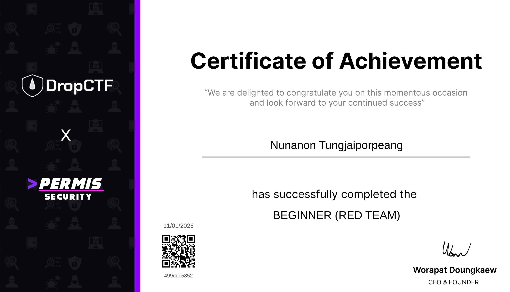

dashboard
/
team
/
project 01
2026-07-21 20:15:50 UTC
<< กลับ Team Portfolio

NO_IMAGE_DATA
');">
Team Project · 01
Completed
DropCTF x Permis Security — Beginner Red Team Assessment
project details
จุดเด่นของผลงาน
จำลองกระบวนการ Red Team ตั้งแต่ Reconnaissance จนถึงการประเมินเป้าหมาย
วิเคราะห์ช่องโหว่และจัดลำดับความเสี่ยงตามผลกระทบ
สร้าง Attack Path เพื่ออธิบายเส้นทางการโจมตีอย่างเป็นระบบ
ประโยชน์ & การนำไปใช้
เข้าใจขั้นตอนการประเมินความปลอดภัยขององค์กร
พัฒนาทักษะการคิดเชิงวิเคราะห์และการแก้ปัญหา
สามารถประยุกต์ใช้ในการทำ Security Assessment และ Penetration Testing
เทคโนโลยี & สกิลที่ใช้
Nmap
Metasploit
BloodHound
Active Directory
C2 Framework
Privilege Escalation
แนวทางการต่อยอด
ศึกษา Active Directory Security ในระดับลึก
พัฒนาทักษะด้าน Windows Security และ Privilege Escalation
viewing: DropCTF x Permis Security — Beginner Red Team Assessment
data source: local /img folder